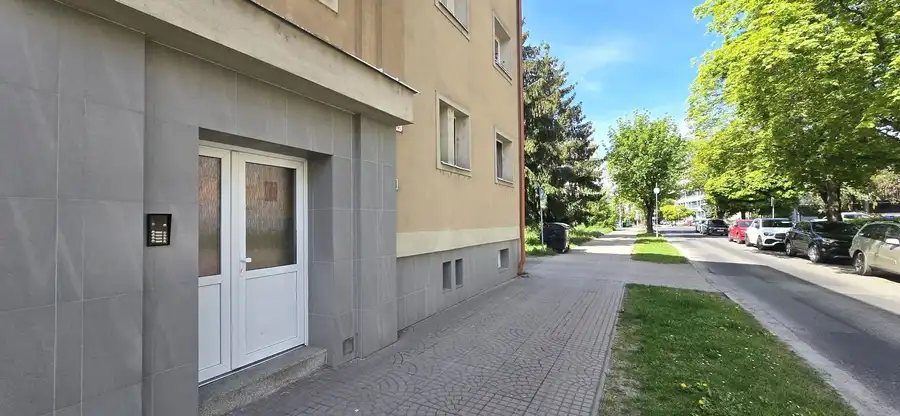
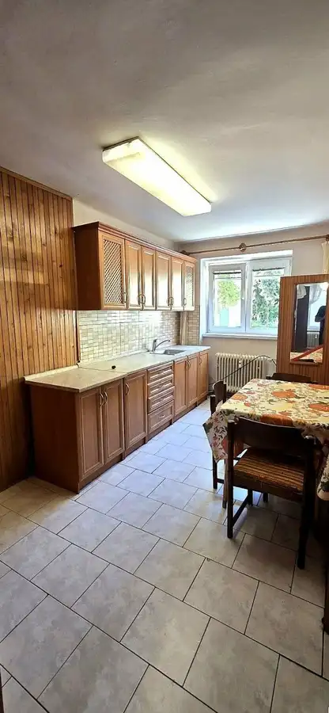
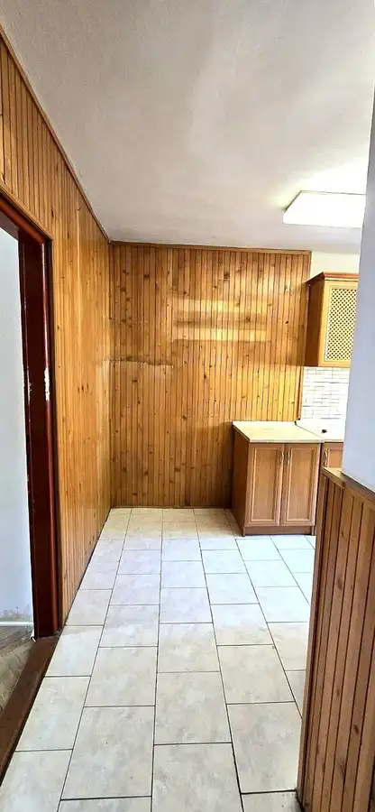
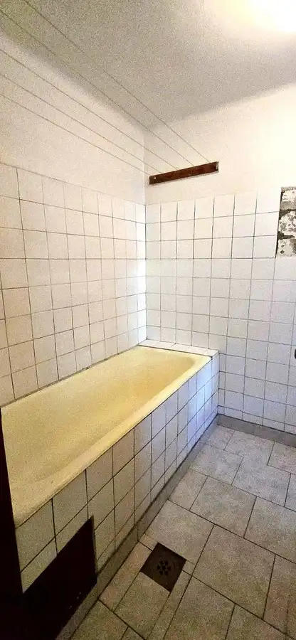
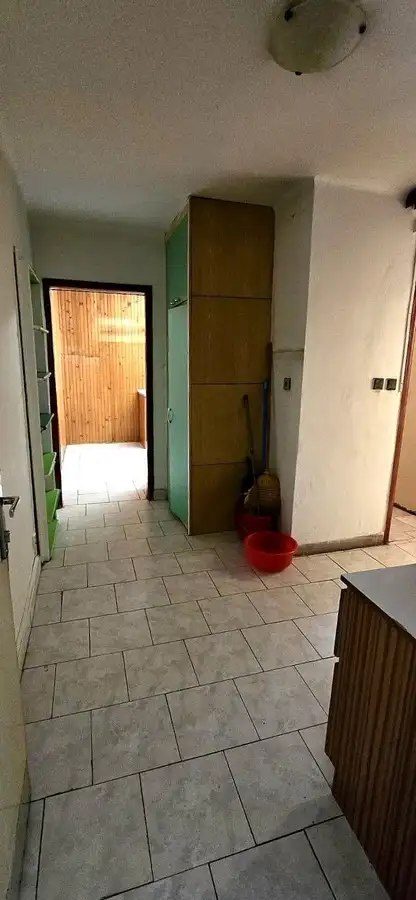
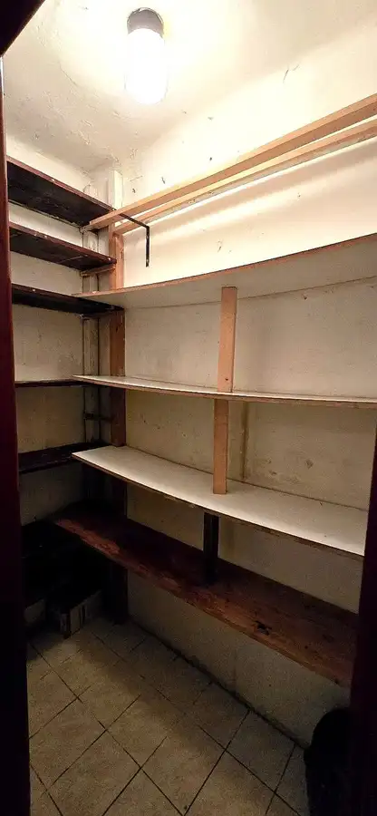

Na predaj priestranný 1 - izbový byt ( 48m2) v centre Zvolena - študenská ulica
Zvolen






- Dispozícia1-izbový
- Plocha48 m²
- Poschodie1. z 3
- StavPôvodný stav
- VlastníctvoOsobné
- Energetická triedaC
O nehnuteľnosti
Ponúkame Vám na predaj veľký 1- izbový byt s výmerou 48M2, situovaný vo vyhľadávanej lokalite v centre mesta Zvolen, na Študentskej ulici. Byt sa nachádza na 1. poschodí tehlového bytového domu a je v pôvodnom stave, čo novému majiteľovi poskytuje ideálnu príležitosť na rekonštrukciu podľa vlastných predstáv. Tento byt vďaka svojej výmere, polohe a dispozícií predstavuje výbornú príležitosť pre klientov, ktorí hľadajú štartovacie bývanie, mestský byt s potenciálom rekonštrukcie, alebo investičnú príležitosť v centre Zvolena. Dispozičné riešenie bytu:- priestranná vstupná chodba, špajza, kúpeľňa s vaňou a oknom, samostatné wc s oknom , kuchyňa a obývacia izba. Základná charakteristika:- podlahová plocha bytu - 48 m²- 2 murované pivnice poskytujúce dostatok úložného priestoru- plastové okná - parkety v izbe - dlažba v kuchyni, na chodbe, v špajzi a v kúpeľni- tehlový bytový dom - obľúbená a kvalitná stavba - atraktívna poloha priamo v centre mesta - vhodný na bývanie aj ako investícia na prenájom - výborní susedia- osobné vlastníctvoLokalita:Byt sa nachádza vo výbornej lokalite s kompletnou občianskou vybavenosťou v pešej dostupnosti. V blízkosti sa nachádzajú obchody, služby, školy, zástavky MHD, reštaurácie aj ďalšie dôležité inštitúcie, čo z tejto nehnuteľnosti robí ideálnu voľbu na pohodlné mestské bývanie. Naše služby zahŕňajú kompletný servis - od profesionálneho právneho a hypotekárneho poradenstva. Ak máte záujem o kúpu, prípadne potrebujete viac informácii, kontaktujte ma na t.č. 0903 468 038 a na mojzisova@poncreal.sk
Parametre
- Cena vrátane energií
- Nie
- Doprava
- MHD
- Druh
- 1 izbový byt
- Dátum zverejnenia
- 25. 06. 2026
- Energetický certifikát budovy
- C
- Podlažie
- 1
- Počet nadzemných podlaží
- 3
- Počet spální
- 1
- Rok výstavby
- 1965
- Stav nehnuteľnosti
- Pôvodný stav
- Typ
- Predaj
- Typ konštrukcie
- Tehlová
- Vlastníctvo
- Osobné
- Vybavenie
- Špajza
- Vybavenie objektu
- Podľa požiadavky
- Úžitková plocha
- 48 m²